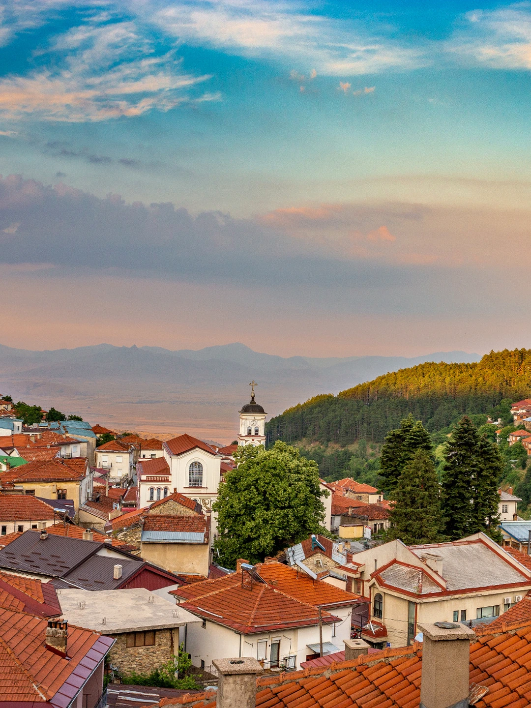
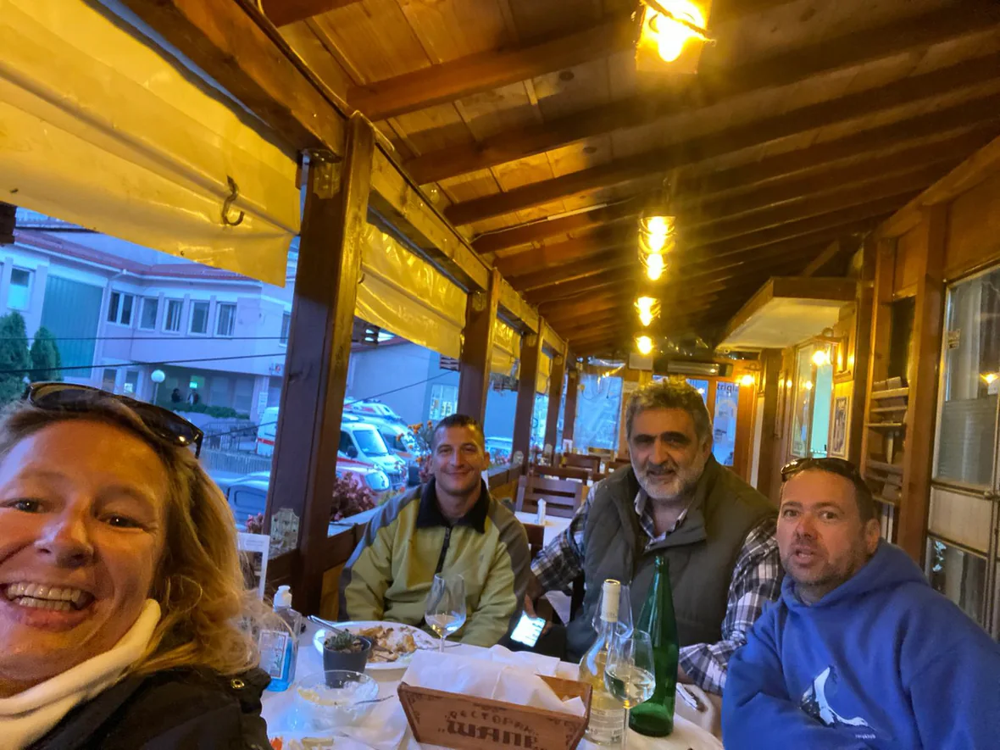
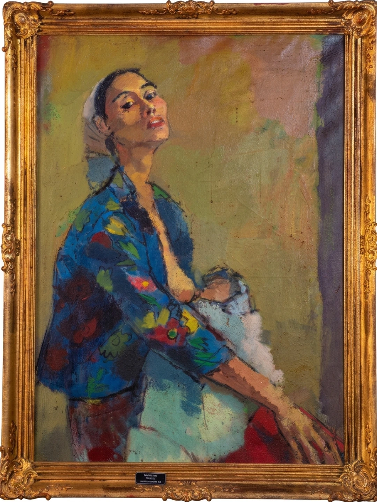
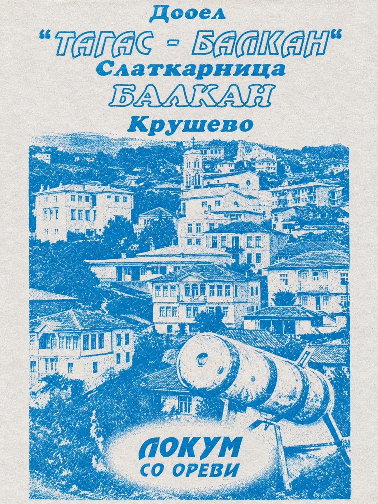
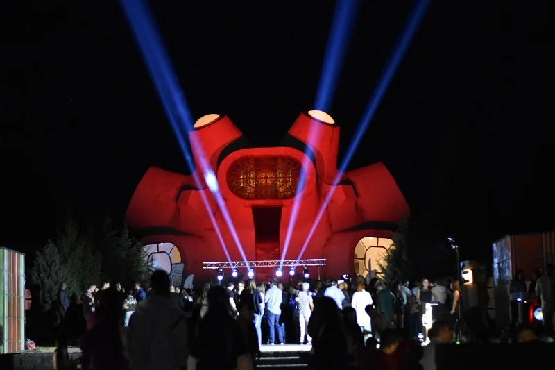
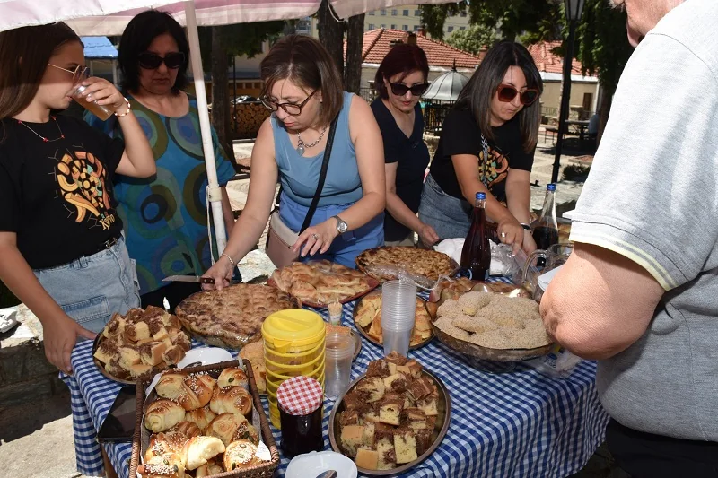
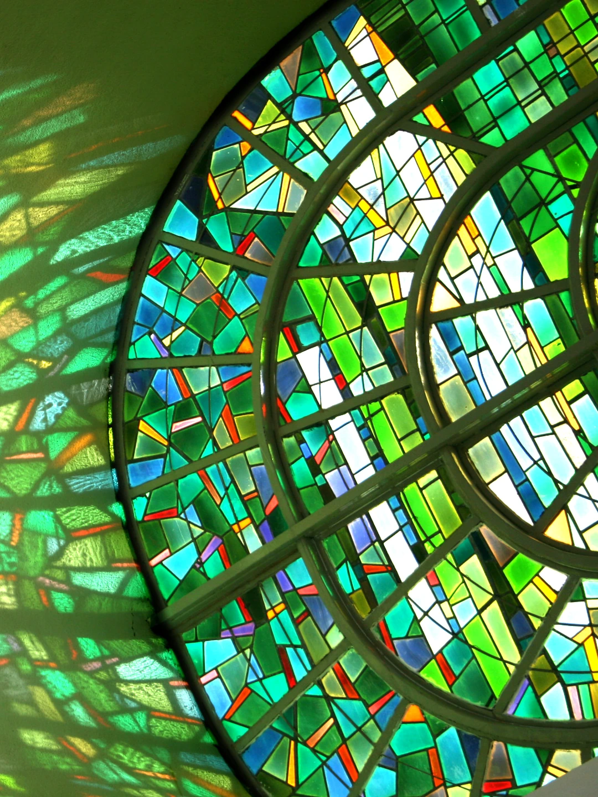
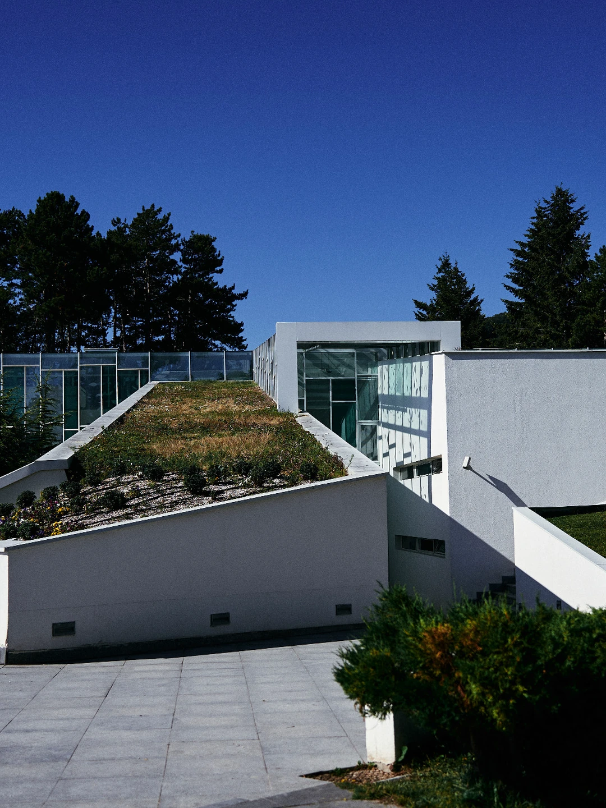

Weekend Guide
Kruševo
Martinoski in the Tahu house, wine above the rooftops, and a summer festival in the mountains.
In this guide
Drinks

Lunch

Šape
Bazaar
Šape has been in the bazaar since 1982. Split a grne (the house earthenware pot) and a plate of kare-kebapi.
Art

Nikola Martinoski Gallery
Tahu house
Go for the portraits. The gallery is inside the nineteenth-century Tahu family house, and you can still see how its rooms were furnished. Look up at the painted upper stories on the walk over from the bazaar.
Sweets

Tagas-Balkan
Kruševo
Get the walnut lokum in the blue box with a cannon on it. Try the celuvki too, crisp little meringues made with walnuts or coconut.
Dinner
ALTO
Panorama Hotel
Book a window table looking across town and ask what Macedonian wines they’re pouring. If you come early, the hotel has a glass-roofed pool overlooking Kruševo.
Music


When in Kruševo
Summer
The 2025 festival lit up Makedonium, laid out a food market in the park, and ran DJ sets there past midnight. The 2026 lineup included The AFT3R. The stages change, so check the next program before you pick a weekend.
Architecture

Makedonium
Gumenje
Walk around the dome first. From inside, those big projecting windows turn into blocks of colored light. The glass is by Borko Lazeski. Ask the museum about getting inside.
Music

Toše Proeski Memorial House
Gumenje
Toše’s stage clothes, instruments, and a reconstruction of his recording studio are on display at his memorial house on Gumenje.
The weekend route
Saturday
Around the bazaar
Martinoski, sausage at Šape, walnut lokum for the bag. Swim at Panorama, then stay for dinner at ALTO.
Saturday directionsSunday
Up to Gumenje
Makedonium first, then Toše’s memorial house. Lunch at Kruševska Odaja.
Sunday directionsStay
Old town or uphill
Stay near the bazaar to get around on foot. Choose Panorama for the pool or Montana for the terrace.
Panorama rooms · Montana roomsWatch Kruševo in summer